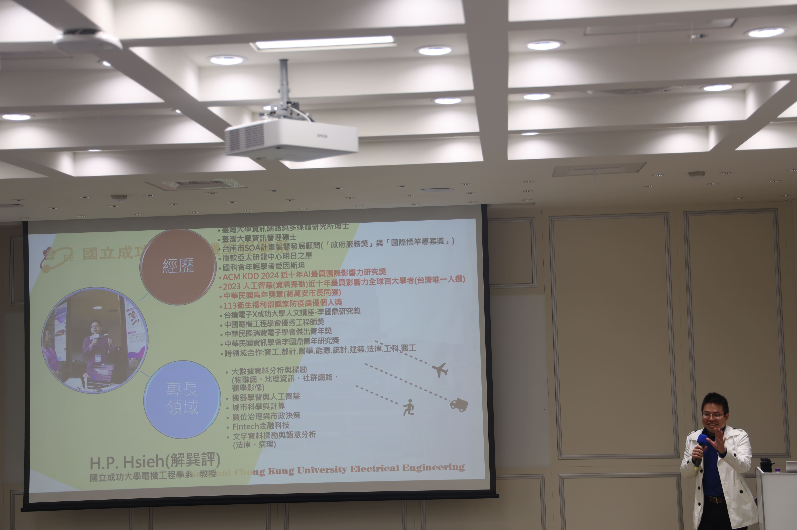
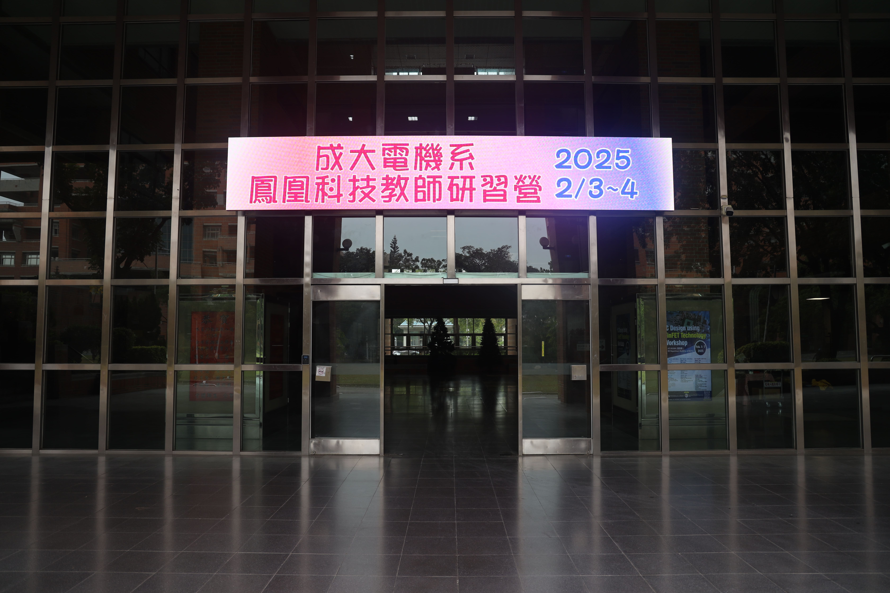
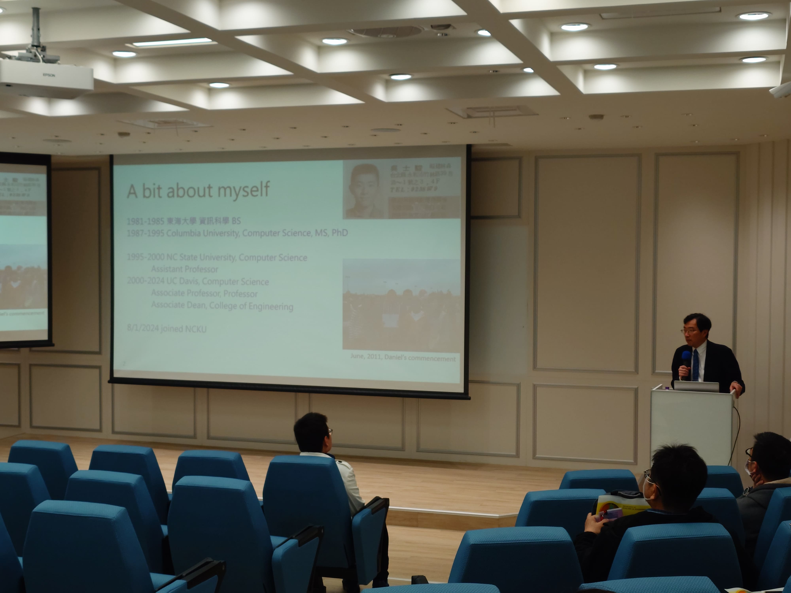
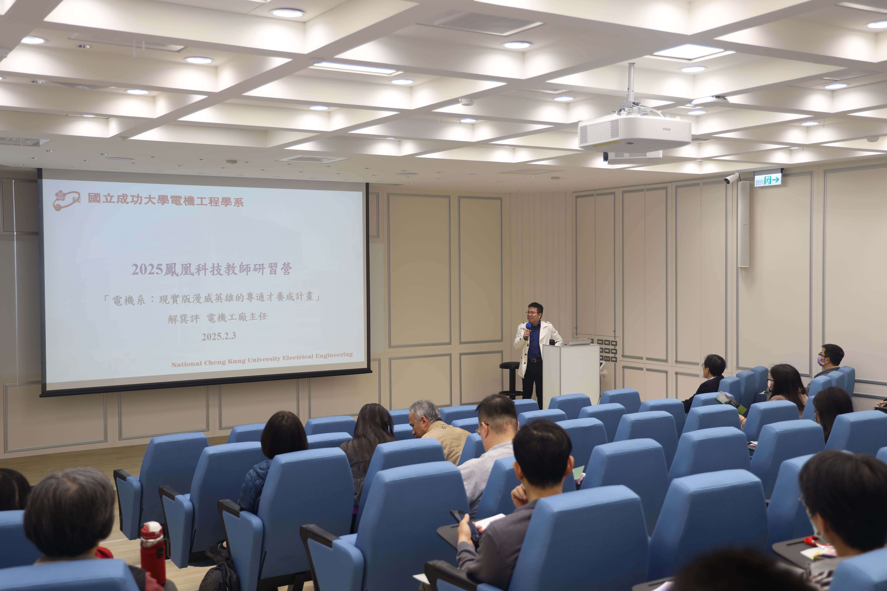
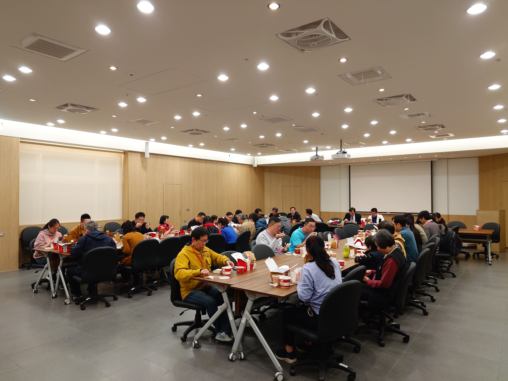
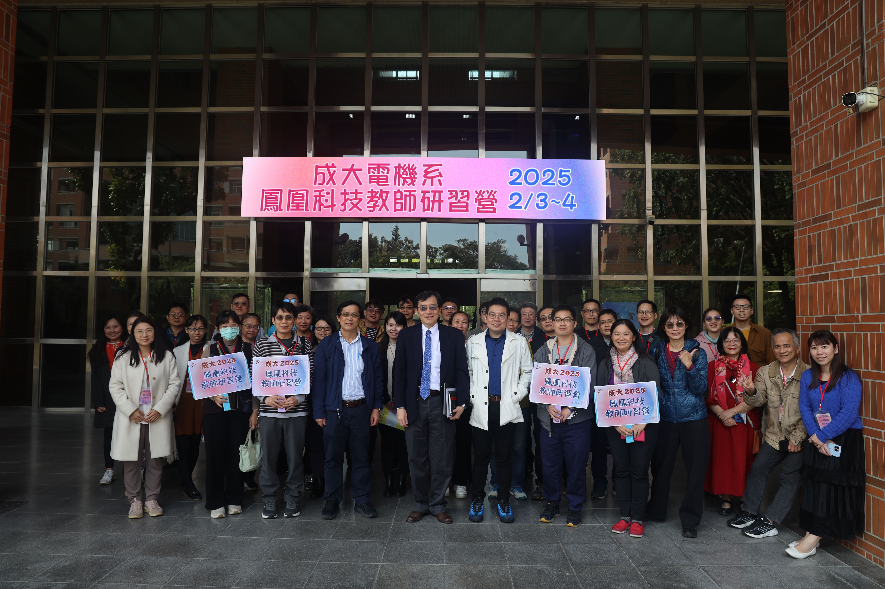
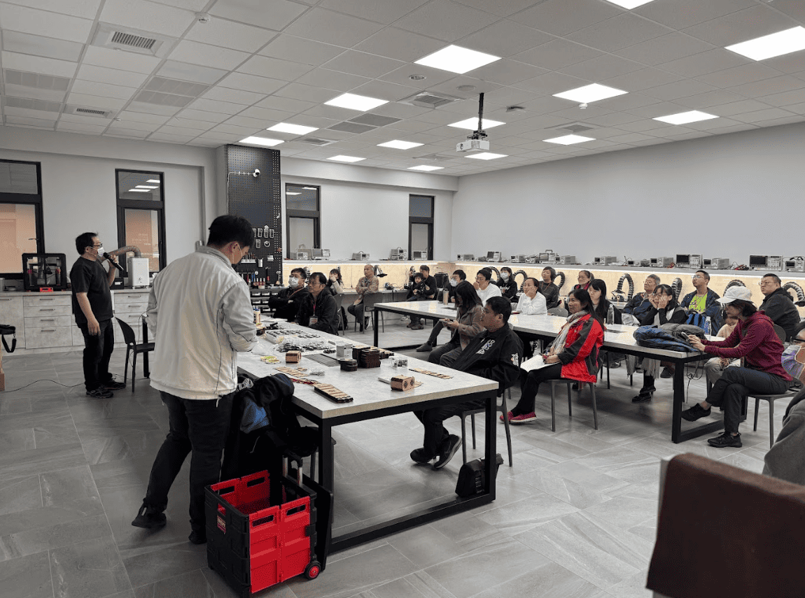
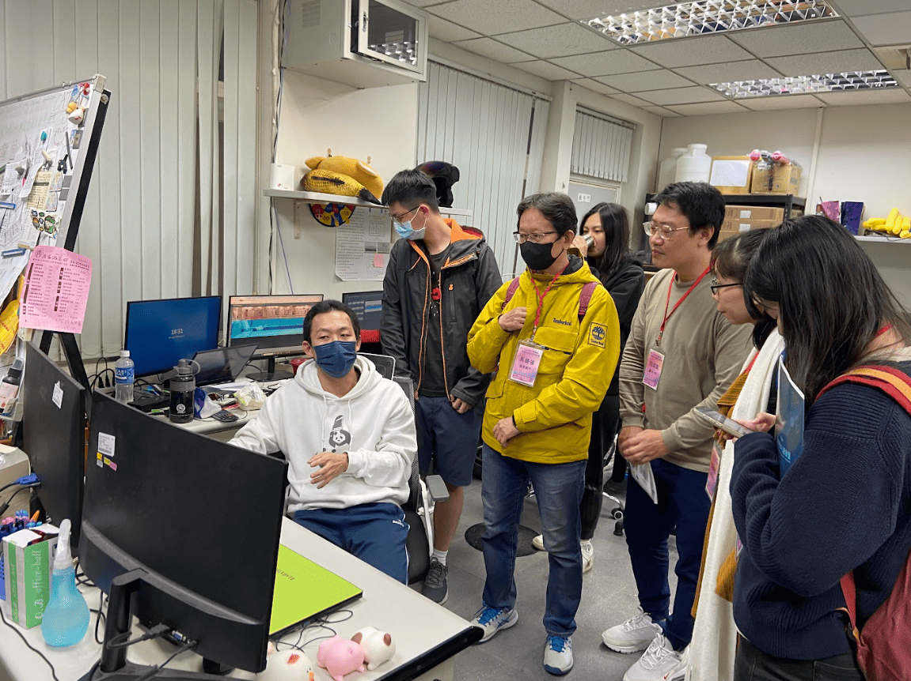

📸 精彩回顧：往屆照片集
2025 鳳凰科技教師研習營








💬 寶貴心得
🎤 1. 講座 / 座談會
：這場演講以大學端的觀點，非常有說服力。回到學校可以陳述給學生。
：對大學教授如何看待目前學生的審查資料有更清楚的看法。
：可以更直接了解大學端看待學習歷程的態度，十分有收穫。
：更加了解大學端教授會想要的學習歷程內容,可以針對著重的點做準備,避免掉一些不需要的內容。
：在會中與會後聚餐中都有機會和主講人交流，收穫頗豐碩。
🔬 2. 實驗室參訪
：了解目前發展及研究生的學習，非常有幫助。
：了解實驗室在做些什麼，對於未來出路如果要介紹給學生會比較具體。
：領域非常專業，見解深刻。
：對於研究生的研究重點有較實務、較具體的瞭解。
：研究生們很認真分享，很棒的經驗！
：很棒的經驗，以小組方式實際參觀實驗室。
🔊 3. DIY 藍芽喇叭
：很有成就感。雖然焊接需要一些經驗與巧手，但成果令人滿意。
：能夠自己做出小成品帶回家，而且是生活上實用的東西，覺得很棒！
：比想像中的有趣且實用，教材上還將每個老師的名字刻上，令人感動。
：雖然是第一次嘗試，但收穫很多，了解電路連接方式與工具使用。
：這是此次的大亮點，充分結合專業與實作。
✨ 4. 整體心得或意見
：除了增進自己的新知識、新想法，也更能增進對成大電機系所的認識。
：感謝成大電機，讓我們在指導學生時，有較多較正確的資訊可以提供。
：謝謝成大電機系的安排，能讓高中老師對成大電機的辦學與特色有更多的理解與認同。
：很充實,也能夠讓我們從中更了解電機系所學與生活中的連結應用。
：很感謝成大電機辦的營隊！未來在上生涯輔導課程可以給學生更多資訊！！
：希望還會有機會參與成大辦的營隊！